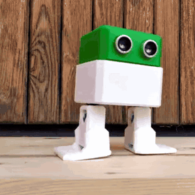

Otto, el bailarín 🕺
Camina, baila, hace moonwalk, esquiva paredes y canta con su parlantito.
🦾 4 servos · S6
🦇 distancia · S7
🎵 buzzer · S5
Cuerpo impreso en 3D · diseño abierto · Video: Otto DIY robot · YouTube